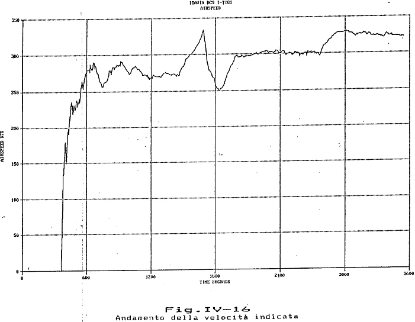

Fasi del volo - Grafici flight data recorder
La perizia Misiti include alcuni grafici relativi ai parametri di volo dell'IH870 registrati dalla "scatola nera", propriamente chiamata FDR o registratore dei dati di volo.
In questa pagina vengono riportati i grafici più significativi. I parametri di volo sono messi in relazione ai punti salienti attraversati dall'IH870 lungo il suo percorso.
INDICE
La perizia Misiti tratta con sufficiente dettaglio le caratteristiche dell'FDR installato a bordo del DC-9 I-TIGI a partire da pag. IV-15 e riporta i seguenti grafici a partire dalla fig. IV-14:
- posizione geografica;
- altitudine;
- velocità indicata dall'anemometro (IAS);
- prua magnetica;
- accelerazione verticale.
L'FDR iniziava a registrare i parametri di volo in funzione del tempo non appena veniva acceso il radio bus di sinistra e incideva le tracce sulle due facce di un nastro metallico tramite "pennini" con la punta di diamante. Il nastro veniva trascinato alla velocità di 6 pollici/ora o 0,042 mm/s.
Parametri di volo
Il grafico seguente visualizza in due scale diverse la quota (scala di sinistra) e la prua e la velocità indicata (scala di destra). Le linee tratteggiate verticali e le relative etichette rappresentano alcuni momenti salienti del volo; muovendo il puntatore del mouse all'interno delle etichette compare la spiegazione.
Le etichette associate alle tre tracce (che compaiono muovendo il mouse nell'area del grafico) mostrano: il tempo trascorso dall'attivazione dell'FDR nel formato "MM:SS (secondi)", l'orario UTC e il valore del parametro.
NOTA BENE Il particolare modo di registrazione dei valori (veramente arcaico) e la bassa qualità dei grafici (deformati e con tratto non sempre netto) introducono incertezze significative nella sincronizzazione dei parametri di volo. Si pensi, ad esempio, alla bassissima velocità di trascinamento del nastro; se i pennini non sono posizionati perfettamente allineati gli uni con gli altri, un errore di posizionamento di appena mezzo millimetro produce uno sfasamento temporale di ben 12 secondi. Tutto ciò implica che il sorvolo dei punti indicati rispetto all'orario UTC e lo sfasamento tra i vari parametri possono essere affetti da errori fino ad una trentina di secondi. Per ulteriori informazioni, si veda il prossimo paragrafo "Conversione dai grafici originali".
Conversione dai grafici originali
I grafici presentati in questa pagina sono stati ottenuti tramite un processo di conversione automatica dei grafici originali presenti nel file PDF della perizia Misiti.

In questo esempio si nota bene la non ortogonalità degli assi, la deformazione del grafico e l'imperfezione della traccia in vari punti, oltre ai vari puntini e strisce.
La lettura automatica di questo grafico genera 12443 punti per il valore della velocità indicata. Tutti questi punti vengono raggruppati (con opportuna tecnica) e ridotti a 1700 punti utili per ricostruire il grafico originale. Ciò è necessario principalmente per evitare che ad un dato tempo (asse orizzontale) corrispondano vari valori del parametro considerato.
Sebbene la ricostruzione sia fedele punto per punto, la deformazione del grafico introduce errori dovuti alla mancanza di punti di riferimento determinabili con esattezza.
Il collegio peritale cerca di stabilire la corrispondenza tra la scala temporale dell'FDR (in secondi) e l'orario UTC facendo alcune deduzioni. Quelle che seguono sono alcune delle considerazioni riportate a pag. IV-17 della perizia:
L'esame del tabulato, consente anche di verificare che il rilascio freni al decollo, si è avuto dopo 366 sec dall'attivazione dell'FDR e, pertanto, l'incidente si è verificato dopo 52' 54" dall'inizio della manovra di decollo.
Poiché, come riportato nella Parte I, il decollo è avvenuto circa alle ore 20 08' locali (18 08' GMT), l'incidente può essersi verificato nell'intorno delle ore 21 00'.54" locali (19 00'.54" GMT).
Tale dato è in buon accordo con quanto ricavabile dai dati radar che, come riferito in altra parte della relazione, rilevano l'ultimo segnale del trasponder alle 20h 59' 45" locali (18h 59' 45" GMT).
Sempre dal tabulato allegato al documento dell'Ente inglese, si può osservare che il velivolo ha raggiunto il livello di volo FL290 a t=1854 sec dall'inizio della registrazione, e quindi a t=24' 48" dal decollo e cioè alle 18h 32'48" GMT ed ha iniziato la discesa a t=2796 sec e cioè alle 18h 48' 30" GMT.
Anche questi dati risultano in buon accordo con quanto riportato nelle trascrizioni delle registrazione delle comunicazioni Bordo/Terra/Bordo (B/T/B) dalle quali risulta che il velivolo si è livellato al FL290 (29000 ft) alle 18h 31' 56" GMT, e tale livello è stato mantenuto fino alle 18h 46' 31" GMT.
Tuttavia, tali considerazioni non possono essere prese tali e quali per essere usate in questa pagina, poiché è necessario mantenere la coerenza della scala dei grafici su tutta l'aerea di ognuno dei grafici.
Pertanto, è preferibile fissare l'unico punto temporale determinabile con certezza: l'istante dell'interruzione dell'energia elettrica e da questo calcolare la scala temporale di ogni grafico (asse orizzontale).
Siccome dai tabulati radar di Roma si nota bene che l'abbattimento è avvenuto circa 3,5 s dopo dell'ultima risposta del transponder del DC-9 e che tale risposta è stata trasmessa alle 18:59:45 (orario di Roma Radar), si può facilmente fissare l'estremo destro dei grafici alle 18:59:48,5. Tenendo conto della scala, si ottiene che il tempo zero dell'FDR corrisponde alle 18:00:40, con precisione ampiamente sufficiente in relazione a quanto già detto sulla scarsa qualità tipografica dei grafici.
Procedendo in questo modo, risulta che la velocità indicata inizia a salire dopo 364 s dall'inizio della registrazione, tempo praticamente identico a quello calcolato dai periti. Una differenza leggermente maggiore si riscontra, invece, nella durata totale della registrazione, che risulta di circa 3549 s, contro i 3540 s calcolati dai periti, differenza, comunque, ben più piccola rispetto all'incertezza sulla corrispondenza del tempo FDR all'orario UTC.
Posizione IH870
Come detto, l'FDR registrava anche la posizione dell'aereo. Tuttavia, l'assenza del dato temporale e la registrazione della posizione molto approssimativa (come si evidenzia dal confronto con i dati radaristici), rende questo grafico praticamente inutile.

L'immagine di sinistra (tratta dalla fig. IV-14 della perizia) è compressa in orizzontale di un fattore 0,743 per portare in scala la longitudine rispetto alla latitudine media di 42°.
Il tratto blu rappresenta la rotta ricavata dall'immagine di sinistra, mentre col tratto verde viene mostrata la rotta calcolata con il processo d'integrazione spiegato in precedenza. Di questa seconda rotta, è riportata soltanto la parte fino a Peretola, non coperta dai dati dei radar di Roma.